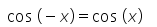

Conceptos
Las funciones trigonométricas son aquellas cuya variable independiente o incógnita es un ángulo. Estas funciones son periódicas, es decir, la evolución de las funciones se repite en intervalos definidos.
Las funciones trigonométricas se representan en el plano cartesiano unitario, con eje de abscisas, u horizontal, y eje de ordenadas, o vertical. Para calcular y representar estas funciones, los ángulos se describen en radianes, una unidad que mide la amplitud de un ángulo en un círculo trigonométrico.
Gráfica de las funciones seno (verde), coseno (azul) y tangente (naranja) representadas en el plano cartesiano unitario.
Existen 6 funciones trigonométricas:
las básicas, conformadas por las funciones seno, coseno y tangente; y
las recíprocas, que incluyen las funciones cosecante, secante y cotangente.
Asimismo, cada función trigonométrica tiene su función inversa, las cuales son: arcoseno, arcocoseno, arcotangente, arcocosecante, arcosecante y arcocotangente. El cálculo de las funciones trigonométricas inversas sirve para obtener un ángulo en radianes.
A continuación, te mostramos las funciones trigonométricas con sus gráficas, así como fórmulas que relacionan las funciones entre sí.
Gráficas y fórmulas de las funciones trigonométricas
seno
En un plano cartesiano unitario, la función sin (x) es una función continua que está contenida dentro del rango -1 ≤ sin (x) ≤ 1. Posee un período de 2π, y como el seno está definido para cualquier ángulo, su dominio son todos los números reales.
Asimismo, el seno es una función impar, pues se cumple que:
El seno tiene las siguientes equivalencias:

Coseno
La función coseno tiene unas características prácticamente iguales a las del seno. Es también una función continua que está contenida dentro del rango -1 ≤ cos (x) ≤ 1, y posee un período de 2π. Igual que el seno, la función coseno está definida para cualquier ángulo, por lo que su dominio son todos los números reales.
A diferencia del seno, el coseno es una función par, pues se cumple que:

La función coseno se calcula de las siguientes maneras:
Tangente
La función tangente describe una evolución distinta a las funciones seno y coseno. En este caso, la función no es continua para todo número real, ya que no está definida para un ángulo tal que:
El período de la función tangente es π, y su rango abarca todos los números reales. Finalmente, es una función impar, pues se cumple que:
Las formas en que podemos calcular la función tangente son las siguientes:

Cosecante
La función cosecante es la función recíproca de la del seno. Como tal, abarca un rango de valores que van desde el hasta -1, o desde 1 hasta , y posee el mismo período que el seno, es decir, 2π.
Su evolución no es continua en todo número real, ya que la función no está definida para un ángulo tal que:
La cosecante es una función impar, pues se cumple que:
Esta función se puede calcular con las siguientes fórmulas:
Secante
La función secante es la función recíproca de la del coseno. A raíz de esto, su rango de valores abarca desde el hasta -1, y desde 1 hasta , y posee el mismo período que el coseno, 2π.
Su evolución tampoco es continua en todo número real, ya que la función no está definida para un ángulo tal que:
La secante es una función par, ya que:
Hay varias maneras de calcular la función secante, como: